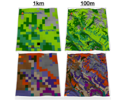
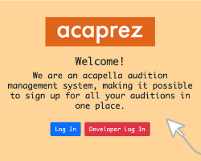
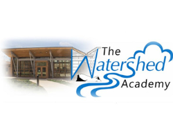

Hello, my name is Jane Castleman.
I am a junior at Princeton University. I am studying Computer Science in the School of Engineering and I hope to earn certificates (minors) in Technology and Society and Environmental Studies. I'm interested in leveraging computing technologies to solve environmental and societal problems.
On campus, I am the President of ResInDe, a club using principles of human-centered design and development to create platforms serving the greater Princeton community. I am also part of The Nassau Weekly, an alt-weekly campus publication, as well as the Women's Rugby Team.
You can find more information through these links:

Projects
Estimating Water Table Depth Using XGBoost Machine Learning models
Goal: Train, validate, and test XGBoost machine learning models on obsered precipitation and temperature data across multiple years to predict water table depth around the Continental United States.
Skills: project design, data visualization, data organization, machine learning with XGBoost
Technologies: Python, SQL

Princeton Acapella Audition platform
Goal: Build an online platform to facilitate acapella auditions for Princeton's Acaprez acapella organization, allowing auditionees to register for auditions and group leaders to manage audition times and callbacks.
Skills: user experience research/design, project management, three-tiered webapp design
Technologies: Python, SQL, JavaScript, Flask, HTML, CSS, Bootstrap

Machine Learning for Hydrology Card Game
Goal: Create a run a card game for local high schoolers to teach the fundamental concepts of training in machine learning as it relates to hydrology. The card game relies on pattern recognition and is hosted on a webapp.
Skills: visual design, educational content development
Technologies: Python, Flask, HTML, CSS, Bootstrap

Net Zero America Employment Implications
Goal: Use employment models to analyze the implications of a net-zero emissions target on local economies to understand how different sectors must adapt to a net-zero economy.
Skills: data analysis and visualization, technical writing
Technologies: Python, R